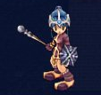
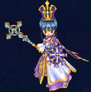
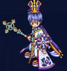
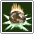
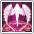
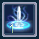

CLERIC / 回復 / 味方の強化
クレリック
回復と強化でパーティを支える系統。味方の防御や攻撃を高め、危険な場面では回復・蘇生を担当します。ソロ向けの攻撃手段もあります。
CLASS OVERVIEW
クレリック系統の特徴
Minor Heal・Major Heal・Cooling Healなどの回復、Bless・Fist Upなどの強化、Revivalによる蘇生を持つパーティ支援系統です。Illusion QuakeやPower Lightなど攻撃手段も習得します。
STATUS GUIDE
クレリックのステータス育成
公式職業紹介ではINTを中心にMENを検討し、武器を装備するためのPOW条件も確認する方向が示されています。プレイヤー向けの育成では、武器に必要なPOWと、スキル速度に必要なMENを確保し、残りをINTへ振る形を基本とします。
公式：Cleric紹介 ↗ 公式Lexicon：Status Point ↗COMMUNITY BUILD
必要POW・MEN → 残りINT
以下はプレイヤー向けの推奨育成方針です。MENやSTAに固定の必須値を設定するものではありません。
POWは使用する杖の装備条件まで確保します。MENは回復・支援スキルの使用感を見ながら、必要なスキル速度を確保できる範囲で追加します。
必要なPOWとMENを確保した後はINTを中心に伸ばし、回復量と魔法攻撃を強化します。耐久力が不足する場合のみSTAを追加します。
目的別に考えると
LEVEL GUIDE
レベル帯ごとの育成目安
Minor Heal、Bless、Fist Up、Revivalなど基本的な回復・支援スキルを習得。Illusion Quakeなど攻撃手段も増えていきます。
Guardianship、Major Heal、Howling、Cooling Healが加わり、パーティ支援と回復の選択肢が増えます。
Fury、Nobleshield、Power Lightなどを習得。回復・支援に加えて自身の強化や範囲攻撃も使えるようになります。
Life Conversion、Restoration、Divine Infusion、Jureah系スキルなど上位の回復・パーティ支援を習得します。
レベル帯はこのページに掲載されている転職Lv・スキル習得条件から整理しています。最適なステータス配分は装備やプレイスタイルによって変わります。
転職ルート





画像出典：公式職業紹介。各段階の2種類の外見を掲載しています。
場所名はゲーム内で探しやすい英語表記です。
全掲載スキル一覧 24件
公式Lexiconの早見表に載っている全項目を収録。効果は日本語の要約です。
右欄は「スキルLv：必要キャラクターLv」。公式表の空欄は省略しています。MP・持続時間・再使用時間は全件が公開されていないため、記載のある情報のみを要約しています。ゲーム内の最新表示を優先してください。
| スキル | 効果・消費アイテム | 各スキルLvの習得条件 |
|---|---|---|
 Illusion Quake | 遠距離攻撃と移動速度低下。 | Lv1: 16 / Lv2: 36 / Lv3: 56 / Lv4: 76 / Lv5: 96 / Lv6: 116 / Lv7: 136 |
Minor Heal | 対象1体のHPを少量回復。 | Lv1: 16 / Lv2: 31 / Lv3: 46 / Lv4: 61 / Lv5: 76 / Lv6: 91 |
Spirit | 対象の動きを止める。攻撃を受けると解除。 | Lv1: 16 / Lv2: 41 / Lv3: 66 / Lv4: 91 / Lv5: 116 / Lv6: 141 |
Bless | 対象の防御を強化。 | Lv1: 21 / Lv2: 41 / Lv3: 61 / Lv4: 81 / Lv5: 101 / Lv6: 121 / Lv7: 141 |
Fist Up | 対象の物理攻撃・魔法攻撃を強化。 | Lv1: 26 / Lv2: 46 / Lv3: 66 / Lv4: 86 / Lv5: 106 / Lv6: 126 / Lv7: 146 |
Poison Clear | 毒・猛毒を解除。 | Lv1: 31 / Lv2: 51 |
Antibuff | 対人戦で対象の一部の強化効果を解除。 | Lv1: 36 |
Holy Cure | 出血・火傷を解除。 | Lv1: 41 / Lv2: 56 |
Revival | 対象を衰弱状態で蘇生。Insignia of Lifeを1個消費。 | Lv1: 46 |
Meditation | 自身または味方1体のMPを継続回復。 | Lv1: 51 / Lv2: 71 / Lv3: 91 / Lv4: 111 |
Oblivion | 遠距離攻撃と継続ダメージ。 | Lv1: 56 / Lv2: 81 / Lv3: 106 |
Ghost Steel | 遠距離攻撃とスタン。 | Lv1: 61 / Lv2: 81 / Lv3: 101 / Lv4: 121 |
Guardianship | 自身または味方1体の防御を一時的に強化。Insignia of Protectionを1個消費。 | Lv1: 66 |
Major Heal | 自身と周囲の味方のHPを回復。 | Lv1: 71 / Lv2: 86 / Lv3: 106 / Lv4: 126 / Lv5: 146 |
Howling | 敵1体の防御を下げる。 | Lv1: 81 / Lv2: 101 / Lv3: 121 / Lv4: 141 |
Cooling Heal | 対象1体のHPを大きく回復。 | Lv1: 91 / Lv2: 111 / Lv3: 131 |
Fury | 自身のINT・スキルクリティカル・移動速度を強化。被ダメージで解除。 | Lv1: 96 |
Nobleshield | 自身の防御を一時的に強化。 | Lv1: 111 / Lv2: 136 |
Power Light | 自身の周囲に範囲攻撃。 | Lv1: 121 / Lv2: 146 |
Life Conversion | 自身のHPをMPへ変換。 | Lv1: 131 |
Restoration | 対象のHP・MPを全回復。Insignia of Protectionを3個消費。 | Lv1: 136 / Lv2: 151 / Lv3: 171 |
Divine Infusion | 短時間、パーティの物理攻撃・魔法攻撃を30増加。 | Lv1: 151 / Lv2: 186 |
 Jureah's Last Stand | 短時間、パーティの防御を500増加。Insignia of Protectionを3個消費。 | Lv1: 156 / Lv2: 176 / Lv3: 191 |
 Jureah's Blessing | 周囲のパーティメンバーにBlessとFist Upを付与。 | Lv1: 136 / Lv2: 141 / Lv3: 146 |
スキルブックの入手
Lv16〜61の初期スキルブックはEsseneのSkill Book Merchantで購入できます。公式一覧では上位のスキルブックは該当レベル帯のマップでドロップすると案内されています。
公式：Skill Book Locations ↗職業別の転職手順
Lv16：最初の職業へ
- Arcarinas Square（Brynhilld）でReinmothに話しかけ、Apply for class changeを受けます。
- 移動先で装備を外し、MordineのBecome a Clericを選びます。
- 受け取った装備とスキルブックを確認します。初期職業名は上の画像付きルートを参照してください。
Lv66：職業ごとの指定装備
購入する町：Essene。Weapon MerchantとArmor Merchantで、次の指定品を各1個購入してください。
武器：Cane of Confession
防具：Armor of Moisture (Water)
商人から買った装備を各1個用意します。ドロップ装備では代用できません。共通で赤のDemon Blood・青のDemon Blood・黄のDemon Bloodも各1個必要です。
Lv96：「Name of Legendary Hero」の回答
Rayna。その後の職業別クエストと共通納品を進めます。
公式表の訪問順
Reilath → Mordine（Jotunnheim / General Church）
- 転職案内NPCから手紙を受け取り、ギルドマスターへ届ける。
- 英雄名はRaynaと回答し、続く職業別クエストを進める。
- Xen Stone ×1、Yellow Watermelon ×5、Caricsobana ×2、50,000 Kronを納品する。
- Yes, I swear an oathを選択して転職。準備が足りない場合は納品条件をゲーム内で確認する。
訪問先の順序は公式表を要約。各NPCの会話選択肢や追加条件が表にない場合は、進行中クエストの表示に従ってください。
Lv16〜131の転職手順 →公式の転職ガイド ↗Lv131：最上位職へ
案内NPC → ギルドマスター（Mordine）→ Saint → ギルドマスターの順に進行します。
- 転職クエストを受けてから、Amaranth Wyrm / Fiersavier / Cow Legend / The Clockのボスインスタンスを攻略。
- Rodney Garters、Tiger Dogma、Naviondark、Artpolyのクエスト品を集め、ギルドマスターへ納品。
- 次のクエストを受け、Eaglerentin PlainのMemorial ChapelでSaintと会話。Fire・Water・Poisonの試練を順に達成。
- 試練終了後は帰還前にSaintへ再度話しかける。その後ギルドマスターに戻り、転職を完了。